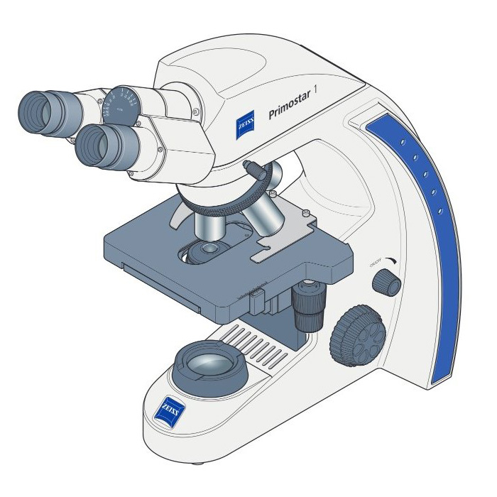

Previous Assignment
Assignment 3
Next Assignment
Simple Counter
Click on the microscope part indicated below
What is the name of this part?
To kohler the microscope use the controls on the microscope.
Brightfield
Rotate the microscope
Rotate the condensor
Load Sample
Take out ocular
Microscope

Condensor